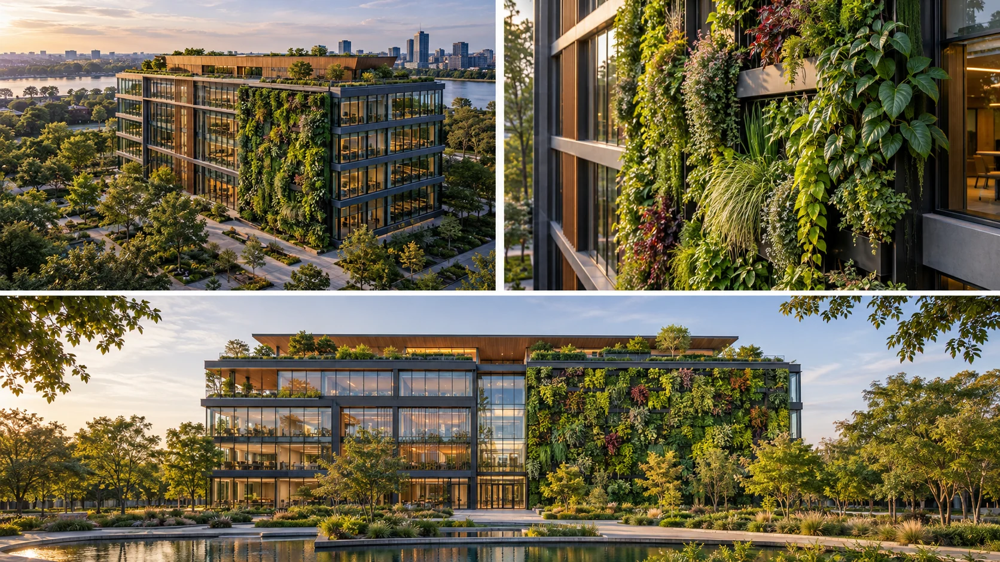

P28 · 초급 · 제작·활용
Living Walls: 건물 외벽을 제품으로 보여주기
외벽의 위치·질감·사용 화면을 구분하고 제품을 가리는 배경 요소를 판단한다.
그림에서 확인할 세 가지큰 경관보다 시공 제품이 읽히는 프레임을 고른다.
1건물 안의 제품 위치
가상 건물 그림에서 식물이 덮인 외벽의 범위를 찾는다. 녹지가 주변 정원인지 건물에 시공된 면인지 명확히 읽히는지 본다.
2식물의 세부
가까운 그림에서 잎과 표면의 밀도를 살핀다. 질감이 읽히는 장점과 건물 안의 위치를 잃는 단점을 함께 비교한다.
3넓은 활용 화면
가로로 넓게 보이는 그림에서 제품의 어느 부분이 중심에 남는지 본다. 전체 컷과 사용 화면이 요구하는 정보의 차이를 찾아본다.
원리를 설명하는 가상 학습 장면
촬영 설계
촬영을 이렇게 설계한다
제품의 범위 표시
교육 제안: 건물 전체 중 고객이 보여주고 싶은 시공 범위를 먼저 정한다. 건축의 다른 요소가 더 눈에 띄면 빛과 시점, 화면 크기를 바꿔 제품의 위치를 명확히 한다.
전체와 질감 분리
교육 제안: 외벽이 어디에 있는지 설명하는 컷과 식물의 표면을 읽는 컷을 따로 만든다. 넓은 장면 하나를 확대해 모든 세부를 해결하려 하지 않도록 필요한 거리를 구분한다.
실제 사용 화면 확인
교육 제안: 홈페이지 헤더처럼 넓은 영역에서 어떤 부분이 남는지 검토한다. 글과 겹쳐 제품이 가려지면 납품 전에 구도를 조정하거나 다른 컷을 선택하는 대안을 준비한다.
맨체스터의 식물 외벽 항공 영상이 고객사 홈페이지의 첫 화면에 활용됐다.
원본 영상Living Walls: 건물 외벽을 제품으로 보여주기
1. 홍보 대상의 명확성
영상을 처음 보고 무엇을 홍보하는지 한 문장으로 적는다. 건물 전체와 식물 외벽 중 어느 대상이 먼저 읽히는지 확인한다.
2. 빛과 질감의 균형
원본의 잎과 밝은 외벽 경계를 본다. 햇빛의 인상과 별도로 식물의 질감과 시공 범위를 구분할 수 있는지 판단한다.
3. 최종 사용처
원작 영상이나 고객의 사용 화면을 볼 때 제품이 중심에 남는지 본다. 홈페이지에 쓰였다는 사실을 홍보 효과의 입증으로 바꾸지 않는다.
재생이 제한되면 원본 영상 새 창을 이용하세요.
제작진 설명 · 한국어 요약 번역
의뢰 목적과 소형 드론 선택
의뢰와 답사
원문 요약 번역: Viritopia가 맨체스터 인근 건물의 식물 외벽을 새의 시선으로 보여 달라고 의뢰했다고 설명한다.
팀은 촬영 전에 건물을 답사하고 소유 운영사의 대표를 만났다.
드론 선택
항공 영상은 250그램 미만 소형 드론으로 찍어 도심 혼잡 지역의 영국 규정에 맞췄다고 한다.
외벽 지상 사진도 함께 촬영했다.
활용
결과 영상은 고객사 홈페이지 헤더와 고객 공유에 쓰였다.
제작진 설명 · 한국어 요약 번역
밝은 날의 노출과 불일치
노출 대응
원문 요약 번역: 매우 덥고 밝은 날이라 ND 필터로 노출을 맞췄다고 한다.
구체 노출값은 적혀 있지 않다.
활용 지속
영상은 사명이 바뀐 뒤에도 홈페이지에 그대로 남았다.
본문 불일치
본문의 제작 설명은 Mavic Mini 2를, 장비 목록은 Mini 4 Pro를 적어 서로 다르며 설명은 없다.
전체 건물과 외벽 세부의 컷 분담은 교육 제안이다.
Kling 프롬프트단문 인과 체인 · 16:9
내가 직접 만들어 본다
전체 컷에서 외벽의 위치를 먼저 세우고 접근하면 질감이 커지는 대신 위치가 사라진다는 인과를 지시한다.
한계 · 웹 화면에서 문구가 제품을 가리는지는 영상으로 검증할 수 없다.
- S01도시의 건물 한쪽 외벽이 식물로 덮여 있다.
- S02영상은 하나의 연속 쇼트다.
- S03건물 앞에는 작은 정원이 따로 있다.
- S04처음 10초 동안 드론은 건물 전체와 식물 외벽을 함께 담는다.
- S05외벽이 건물의 한 면에 있기 때문에 위치가 분명하다.
- S06다음 10초 동안 드론은 정원을 지나 외벽으로 다가간다.
- S07드론이 가까워지자 잎의 표면이 점점 크게 읽힌다.
- S08외벽이 화면을 채우자 건물의 위치는 사라진다.
- S09마지막 10초 동안 드론이 곧바로 뒤로 물러난다.
- S10물러나자 외벽이 다시 건물 속 한 면으로 돌아온다.
- S11외벽은 화면 중앙을 지킨다.
- S12외벽 위쪽 하늘은 넓게 비어 있다.
[네거티브]
- 외벽 대신 지붕이 식물로 덮여 있는 것 금지
- 중간 컷으로 장면이 끊기는 것 금지
- 정원이 외벽과 한 덩어리로 섞이는 것 금지
- 식물 외벽이 건물에서 떨어져 보이는 것 금지
- 외벽이 건물 뒤편에 가려져 보이는 것 금지
- 드론이 외벽을 지나쳐 정원에 머무는 것 금지
- 가까워져도 잎이 뭉개져 질감이 흐린 것 금지
- 외벽이 채워져도 건물 윤곽이 계속 보이는 것 금지
- 드론이 옆으로 틀어 외벽이 사라지는 것 금지
- 물러나도 외벽이 건물과 무관해 보이는 것 금지
- 외벽이 한쪽 구석으로 밀려나는 것 금지
- 하늘에 간판이나 건물이 가득 들어차는 것 금지
결과에서 볼 것
- 정원과 외벽이 구분되어 외벽의 위치가 보였는가
- 접근할수록 질감이 커지고 위치가 사라졌는가
- 물러났을 때 외벽이 중앙에 남고 위쪽이 비었는가
프롬프트 설계안이다. Kling에서 실제로 생성해 보기 전에는 결과를 보장하지 않는다. 길이와 모드는 Kling 화면에서 확인해 고른다. 이미지에서 영상으로 만들 때는 첫 프레임 이미지를 실제 입력으로 넣는다.